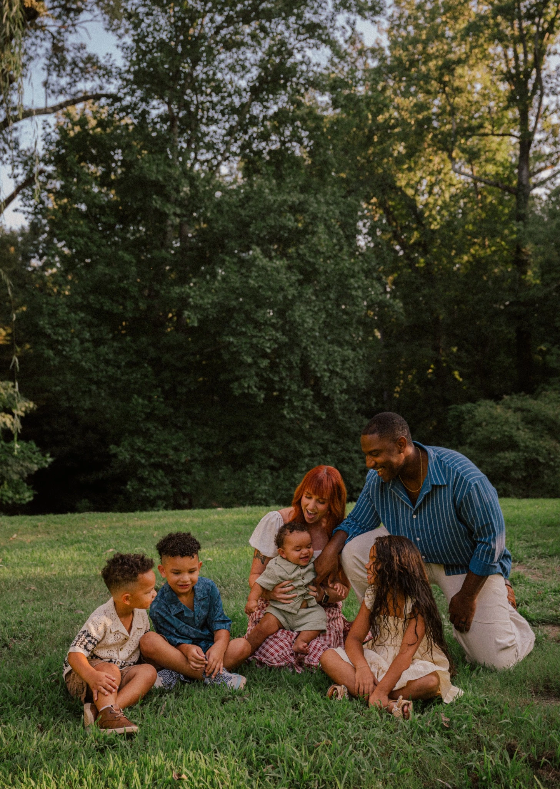
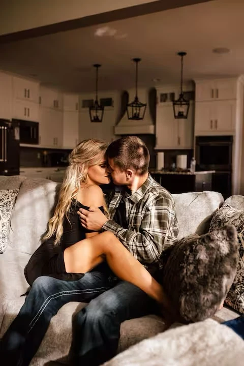
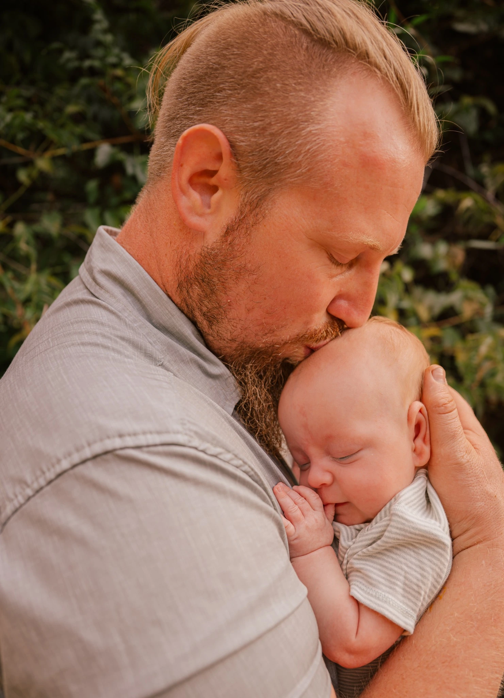
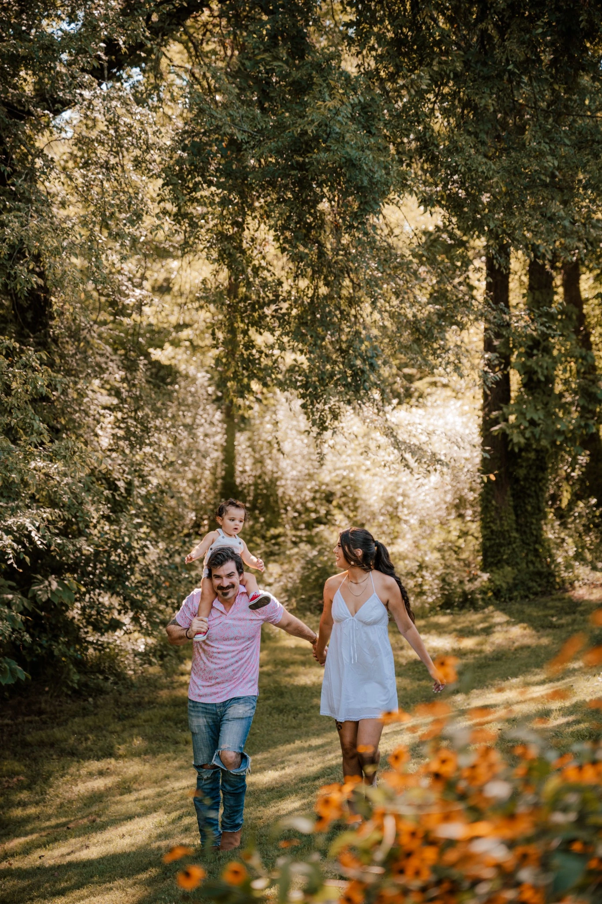

Family photography
Connection-focused portraits for families who want something warm, relaxed and full of personality.
Luxe Lens Photography
This page is the beginning of a full photography branch: real portfolio galleries, clear session information and a simple booking path—all under Jakab All Trades.
Portfolio
These categories are ready for full galleries. The current images are temporary crops from the material you supplied and should be replaced with the original high-resolution photographs.

Connection-focused portraits for families who want something warm, relaxed and full of personality.

Natural prompts and expressive storytelling for couples, engagements and meaningful milestones.

Milestones, imaginative concepts and personality-driven portraits that feel fun instead of forced.

The experience
A strong portfolio page should answer the questions a future client naturally has: what the work feels like, which kinds of sessions are offered, where the photographer is based and how to take the next step.
As the galleries grow, each category can become its own page with unique photographs, useful location information, frequently asked questions and descriptive image captions.
A simple path
Visitors begin with the gallery category closest to the session they have in mind.
The booking link opens the official inquiry process without forcing visitors through unrelated content first.
Future service pages can answer questions about location, styling, timing and what clients can expect.
Gallery and print information can live together later, making finished images and products easier to understand.
Let’s create something meaningful
Use the official booking page to share what you have in mind and begin the conversation.